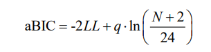

本篇文章仅仅是对LCA进行一个介绍, 并且最后附有一个视频教程, 如果图文教程理解困难, 可以直接跳转到视频教程.
如果你需要咨询, 注意我们是付费咨询奥, 联系我就可以了(wx: mllncn).
LCA Latent Class Analysis 简介
这只是对潜在类分析(LCA)的一般概念的非常简要的介绍。
题目写的很简单，但本篇文章将让你大致了解该分析的目的
以及一些进一步学习LCA的建议。
继续阅读之前, 你需要对结构方程模型(SEM)有一定的理解,
我们不会在这篇文章中介绍SEM的概念.
Latent Variables 潜变量
LCA(Lazarsfeld & Henry, 1968; Goodman, 1974)是一个测量模型, 如果里学习过SEM, 你应该知道SEM包括测量模型和结构模型,
所以理论上来说, LCA是比SEM概念要小.
LCA涉及一个潜变量, 及其附属的几个测量指标(例如问卷题目), 这非常类似一个潜变量的验证性因子分析(CFA), 只不过CFA的潜变量是连续变化的,
而LCA的潜变量是分类变量.
例如，传统的因子分析可能涉及一组关于
各种政治态度的题目, 用来定义政治保守主义这个潜在变量。
这种方法的优点是, 用一个潜变量代表几个题目的共同方差，
消除测量误差和各个观测变量独有的一些方差. 这个潜变量可以进一步进行回归分析等.
与之对应, LCA是利用几个观测指标来将被试分类, 比如将被试分为保守主义和非保守主义,
这时候潜变量是一个分类变量, 而且是只有两个分类. 由于观测指标可以是连续变量,
也可以是分类变量, 前者可以做LPA(潜在剖面分析), 后者就是LCA(潜在类别分析).
LCA潜在类别分析
LCA没有预测和被预测变量, 因为LCA分析的目的是得到一个分类变量, 可以将被试唯一的分配到一个组别中.
下图遵循了结构方程模型的一些绘图规则, 绘制了一个LCA模型, 椭圆表示潜变量, 用η表示, 上标c表示类别数, 比如2分类, 就是c=2.
矩形表示观测指标, 用y表示. 图里的箭头都表示回归, 箭头都是指向观测指标, 代表了潜变量可以预测观测指标.
v表示回归模型中的常数项, 如果观测指标是分类变量, 我们使用τ, 代表阈值, 也就是广义线性模型的阈值.
我们用了虚线箭头, 因为LCA不是传统的因子分析, 没有所谓的因子载荷(回归斜率). 对于LCA, 截距(连续指标)或者反应概率(分类指标)就
代表了因子和指标之间的关系强弱.
模型识别,参数估计和拟合
LCA最常用的估计方法是极大似然估计, 用的是期望极大算法(EM)(Dempster, Laird, & Rubin, 1977).
EM算法的核心就是, 你需要给参数设置初始值, 然后不断迭代, 更新参数, 以便极大化模型拟合.
所以, 初始值很重要, 不同的初始值可能会得到不同的结果. 因此我们经常使用很多初始值重复进行EM估计,
以便于让我们获得全局的极大值, 而不是局部最大值 (Hipp &Bauer, 2006).
不过你不用担心, 软件会帮我们做好这些工作, 只不过我们要知道即便是软件也需要你来决定使用多少个初始值,
知道这些就可以帮你了解这些软件为什么要设置一些莫名的参数.
为了模型可以识别, 潜在类别变量的分类数要低于测量指标的数目, 因此如果有三个测量指标, 你最多可以将被试分为2类.
多余LCA的模型, 使用两分类的类别变量作为测量指标, 我们使用似然比卡方(G2)和皮尔逊卡方作为评价模型的指标. 自由度如下图所示,
G2对于离散数据是有问题的, 因此这种情况下, 皮尔逊卡方更合适. 然而, 对于连续指标, 没有卡方拟合指标. 评价拟合的指标是基于似然值的, 比如 Akaike Information Criteria 和 Bayesian Information Criteria . sample size adjusted BIC(aBIC)被认为优于其他指标 (e.g., Nylund, Asparouhov, & Muthén, 2007)
-2LL这个量是H0模型的似然值对数, q是自由参数的个数, N是样本量.
另一个与拟合有关的概念是熵(Entropy), 熵用来评估分类的准确率. 尽管有很多衡量准确率的指标,
熵是最常用的 (Ramaswamy, DeSarbo, Reibstein, & Robinson, 1993).
我们不过多解释这些公式, 因为这不是这篇文章想要达到的高度.
决定分类数
潜在类别分析过程涉及如何确定正确的类别数量，
有时称为类枚举. 尽管研究人员可能对
类数有一个理论的判断，但是我们仍然需要在具有不同类数的模型之间进行比较,
提供类数正确的证据。两个不同类数的模型产生两个对数似然值
，这个对数似然的差值不具有卡方分布的特性, 因此进行精确测试来比较
模型的方法是不存在。
BIC 或调整后的 BIC 通常用于此目的（较低的值
表示更好的拟合）并且表现相当好（Tofighi & Enders, 2006），但是一些模拟研究
建议更精确的方法可能更可取. 这些方法旨在比较两个不同的模型(只有一个潜在类别)。
在几个替代方案中，有一个bootstrap似然比检验 (Nylund et al., 2007)、Lo-Mendell-Rubin 调整似然比检验和
Vuong-Lo-Mendell-Rubin 似然比检验 (Lo, Mendell, Rubin, 2007; Vuong, 1989)。
软件
大多数软件程序使用最大似然估计
算法，但贝叶斯过程也是可能的。有各种各样的软件程序可以做LCA，
包括 R 中的 poLCA 和 lcca 包，PROCLCA这是一个免费的
SAS程序 (Lanza, Collins, Lemmon, & Schafer, 2007) 和 Latent Gold (Vermunt & Magidson,
2005)，以及结构方程建模包，例如 Mplus (Muthén & Muthén, 1998–2012), 还有Mx (Boker et al., 2012)
它在结构方程模型框架中（所谓的混合建模方法）整合了LCA。 Mplus 使用最大似然-EM
方法以稳健的标准误差调整为默认值。
案例
案例使用了sleep数据, 来自澳大利亚一项睡眠障碍研究的.
我在 R 中使用 poLCA 包（Linzer & Lewis，2011）。它需要编码为 1 和 2 的数字变量（或
它们必须是正整数）。 参数nrep代表初始值的个数, 这个初始值是用在EM算法的。
视频教程
类似教程
注意
统计咨询请加QQ 2726725926, 微信 shujufenxidaizuo, SPSS统计咨询是收费的, 不论什么模型都可以, 只限制于1个研究内.
跟我学统计可以代做分析, 每单几百元不等.
本文由jupyter notebook转换而来, 您可以在这里下载notebook
可以在微博上@mlln-cn向我免费题问
请记住我的网址: mlln.cn 或者 jupyter.cn